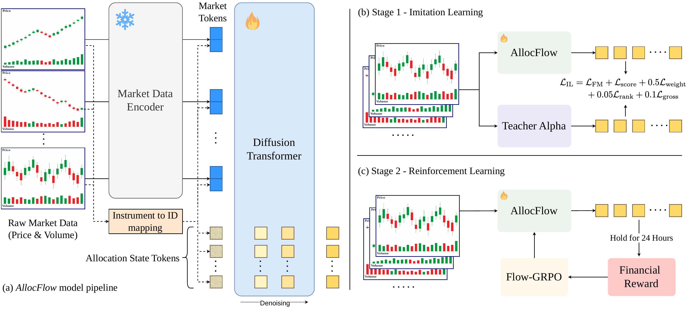
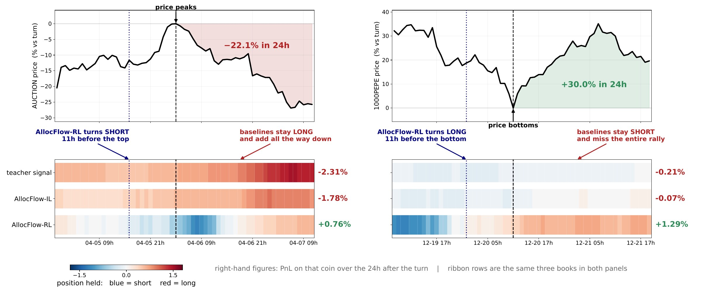

Portfolio trading · Flow matching · Reinforcement learning
AllocFlow
End-to-End Portfolio Trading Action Generation from Raw Market Data
One model reads the raw price history of every asset and writes the whole portfolio at once.

Compress each market
Write the whole book
Imitate, then compete
At a glance
The whole book, in one decision.
Nov 2, 2024 – Dec 31, 2025 test period, mean over five training seeds. Backtests; not investment advice.
Why flow matching
Learn the distribution, not the average.
Good books come in clusters. Average them and you get a bad book; flow matching learns the whole distribution.
Exact flow-matching field for a 2-D mixture of book clusters. AllocFlow learns the same kind of field over all assets.
Results
After fees. Out of sample.
One training run (seed 42), cumulative PnL in % of starting capital after costs; digitized from Figure 1 of the paper.
| Policy | Return % ↑ | Max drawdown % ↓ | Sharpe ↑ | Calmar ↑ | Daily turnover |
|---|---|---|---|---|---|
| AlphaGen | 35.42 | 20.60 | 1.242 | 1.720 | 0.248 |
| AlphaSAGE | 31.30 | 23.36 | 1.396 | 1.340 | 1.255 |
| R&D-Agent-Quant | 20.69 | 18.53 | 0.967 | 1.117 | 0.397 |
| AlphaAgent | 29.12 | 26.93 | 1.048 | 1.081 | 0.651 |
| AgenticAlpha (teacher) | 33.92 | 19.57 | 1.472 | 1.733 | — |
| AllocFlow (IL only) | 27.79 | 29.10 | 0.954 | 0.955 | 1.143 |
| AllocFlow (IL + RL) | 51.38±2.04 | 12.81±1.51 | 2.192±0.086 | 4.043±0.379 | 1.976±0.047 |
| Period | Return % | MDD % | Sharpe | Calmar |
|---|---|---|---|---|
| Nov 2024 – Dec 2025 | 51.38 | 12.81 | 2.192 | 4.043 |
| Jan – Jun 2026 (new) | 62.53 | 12.77 | 2.06 | 4.90 |
20 months out of sample in total · 2026 run settles exchange funding
Analysis
Every piece matters.
A flow head turns rewards into gains.
Imitation first is essential.
Good features need the right head.
Policy gradients beat backprop.
RL improves every teacher.
Sharpe gives the best balance.
Inside two decisions
RL changes direction before the turn.

AUCTION · falling peak
RL turns short 11 h before the peak · next 24 h: +0.76% vs −1.78% (imitation)
1000PEPE · rebound
RL turns long 11 h before the bottom · next 24 h: +1.29% vs −0.07% (imitation)
Abstract+
Real-world portfolio management requires converting noisy market observations into coordinated, simultaneous allocations across multiple assets under shared capital constraints. Advances in forecasting models and alpha discovery help identify opportunities. However, traditional pipelines often decouple signal forecasting from portfolio construction, potentially misaligning learning with allocation and execution objectives. We present AllocFlow, an end-to-end flow-matching framework that directly generates joint portfolio allocations from raw multi-asset market histories. To capture dependencies among portfolio positions, AllocFlow employs a cross-asset flow Transformer conditioned on temporal market representations to generate continuous, signed position weights across all instruments jointly. To address the sample inefficiency and instability of learning continuous allocation policies from scratch, we establish a two-stage training scheme: strategy-supervised imitation shapes a structured distribution of candidate portfolios, followed by group-relative reinforcement learning (RL) that refines joint decisions using portfolio-level financial rewards and a frozen policy reference. On hourly cryptocurrency perpetual futures, RL refinement raises the annualized net return of the imitation policy from 27.79% to 51.38% and its Calmar ratio from 0.955 to 4.043, surpassing the teacher strategy on every metric, and AllocFlow reaches a Calmar ratio of 4.90 on six further months of unseen 2026 data without retraining.
Citation
BibTeX
@article{wang2026allocflow,
title = {AllocFlow: End-to-End Portfolio Trading Action
Generation from Raw Market Data},
author = {Annan Wang and Yuchen Xie and Yu Cen and
Leon Liangyu Chen and Qianyu Julie Zhu and
Xin Li and Tianyi Wei and Weisi Lin},
journal = {arXiv preprint arXiv:2611.19937},
year = {2026}
}